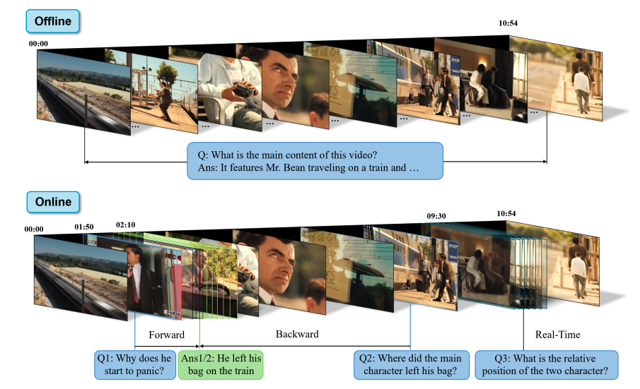
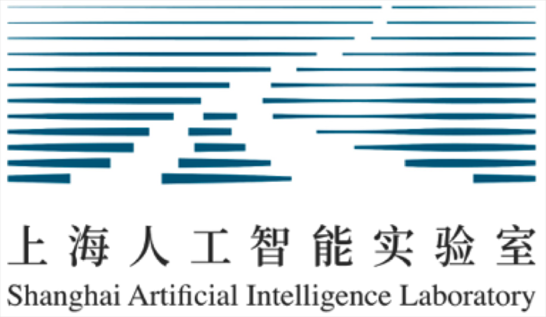

|  |
OVBench: How Far is Your Video-LLMs from Real-World Online Video Understanding?
Preprint
[Paper]
[Code]
Supported the development of practical VideoLLMs capable of online processing and response, bridging the gap between model performance and human-level online video understanding in video-based AI.
|
|  |
Shanghai AI laboratory, opendatalab
Jul 2024 - Present
OCR-Free Visual Understanding && Pretrain Models
Research Intern
Advisor: Bin Wang and Conghui He
|
|
Shanghai AI laboratory, Large Model Center
Nov 2023 - May 2024
Video-LLMs && Online Video Understanding
Research Intern
Advisor: Jiaqi Wang
|
|
Peking University, EECS
Starting in Fall 2025
Major in Artificial Intelligence
Ph.D. Candidate
|
|
Beihang University, School of Automation Science
Sep 2021 - Present
GPA 3.85 Rank:1 / 203
B.Eng. Student
|
|
Honor
|
- Star of “Yu-Yuan”, Top 2 of 600+ ,The highest honor of the department of Automation.
- Undergraduate National Scholarship (rank: 1/156)
- Outstanding student of Beihang University(5%)
- Merit Student of Beihang University(5%)
|
Updated on November 12, 2024.
|
|